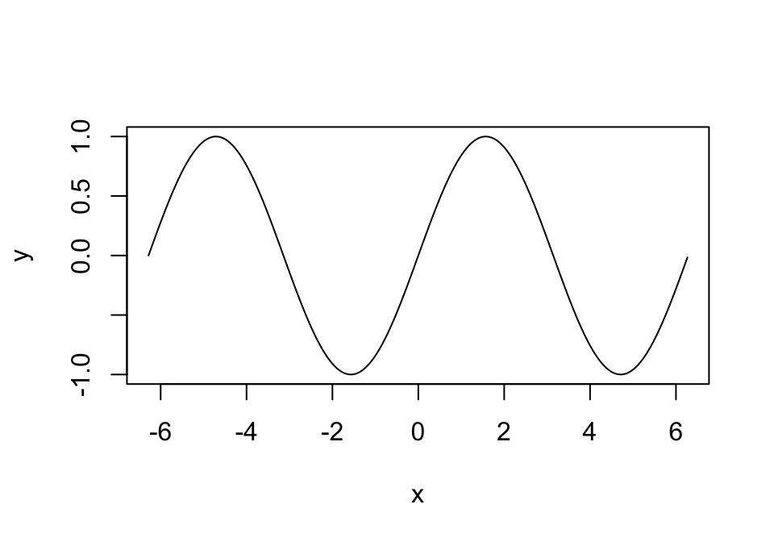
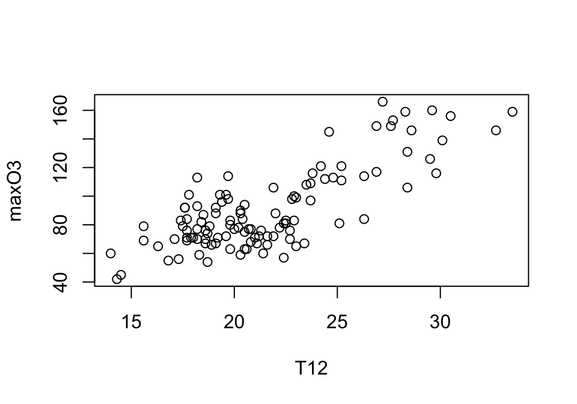
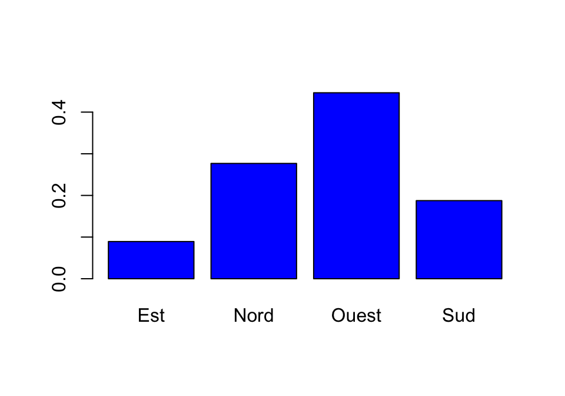
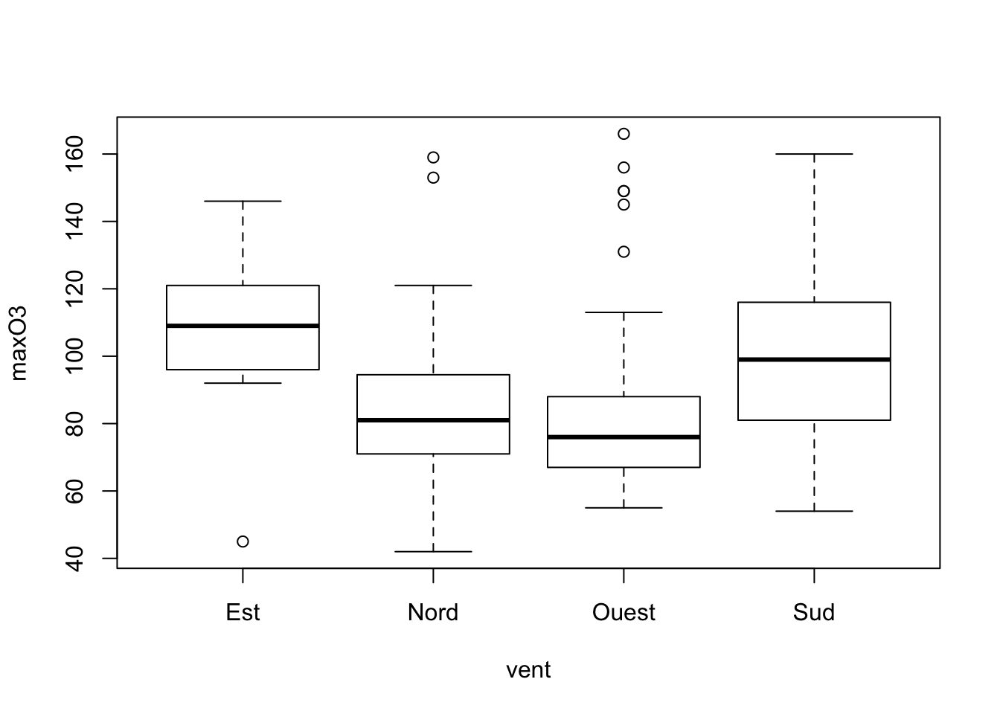
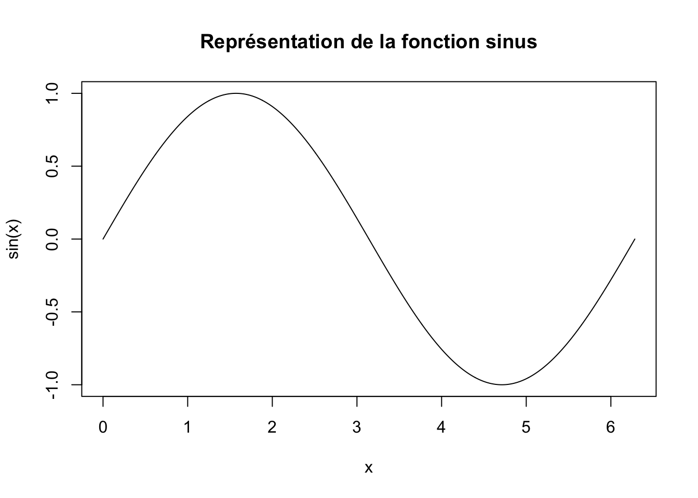
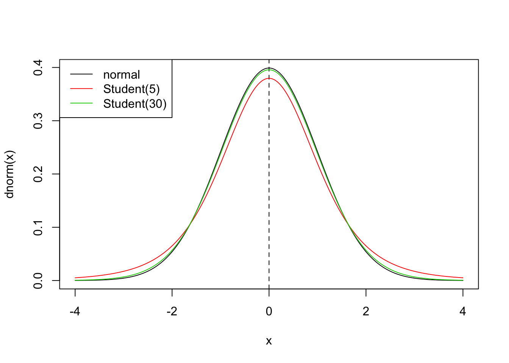

Chapitre 2 Le package ggplot2
Il est souvent nécessaire d’utiliser des techniques de visualisation à toutes les étapes d’une étude statistique. Un des avantages de R est qu’il est relativement simple de mettre en oeuvre tout les types de graphes généralement utilisés. Dans cette fiche, nous présentons tout d’abord les fonctions classiques qui permettent de tracer des figures. Nous proposons ensuite une introduction aux graphes ggplot qui sont de plus en plus utilisés pour faire de la visualisation.
2.1 Fonctions graphiques conventionnelles
Pour commencer il est intéressant d’examiner quelques exemples de représentations graphiques construits avec R. On peut les obtenir à l’aide de la fonction demo.
2.1.1 La fonction plot
C’est une fonction générique que l’on peut utiliser pour représenter différents types de données. L’utilisation standard consiste à visualiser une variable y en fonction d’une variable x. On peut par exemple obtenir le graphe de la fonction \(x\mapsto \sin(2\pi x)\) sur \([0,1]\), à l’aide de


Nous proposons des exemples de représentations de variables quantitatives et qualitatives à l’aide du jeu de données ozone.txt que l’on importe avec
## maxO3 T9 T12 T15
## Min. : 42.00 Min. :11.30 Min. :14.00 Min. :14.90
## 1st Qu.: 70.75 1st Qu.:16.20 1st Qu.:18.60 1st Qu.:19.27
## Median : 81.50 Median :17.80 Median :20.55 Median :22.05
## Mean : 90.30 Mean :18.36 Mean :21.53 Mean :22.63
## 3rd Qu.:106.00 3rd Qu.:19.93 3rd Qu.:23.55 3rd Qu.:25.40
## Max. :166.00 Max. :27.00 Max. :33.50 Max. :35.50
## Ne9 Ne12 Ne15 Vx9
## Min. :0.000 Min. :0.000 Min. :0.00 Min. :-7.8785
## 1st Qu.:3.000 1st Qu.:4.000 1st Qu.:3.00 1st Qu.:-3.2765
## Median :6.000 Median :5.000 Median :5.00 Median :-0.8660
## Mean :4.929 Mean :5.018 Mean :4.83 Mean :-1.2143
## 3rd Qu.:7.000 3rd Qu.:7.000 3rd Qu.:7.00 3rd Qu.: 0.6946
## Max. :8.000 Max. :8.000 Max. :8.00 Max. : 5.1962
## Vx12 Vx15 maxO3v vent pluie
## Min. :-7.878 Min. :-9.000 Min. : 42.00 Est :10 Pluie:43
## 1st Qu.:-3.565 1st Qu.:-3.939 1st Qu.: 71.00 Nord :31 Sec :69
## Median :-1.879 Median :-1.550 Median : 82.50 Ouest:50
## Mean :-1.611 Mean :-1.691 Mean : 90.57 Sud :21
## 3rd Qu.: 0.000 3rd Qu.: 0.000 3rd Qu.:106.00
## Max. : 6.578 Max. : 5.000 Max. :166.00On visualise tout d’abord 2 variables quantitatives à l’aide d’un nuage de points : la concentration en ozone maximale maxO3 en fonction de la température à 12h T12.

Comme les deux variables appartiennent au même jeu de données, on peut obtenir la même représentation à l’aide d’une sytaxe plus claire qui ajoutent automatiquement les noms des variables sur les axes :

Une autre façon de faire (moins naturelle) :

Il existe des fonctions spécifiques pour chaque type de graphs, par exemple histogram, barplot et boxplot :



2.1.2 Graphes interactifs avec rAmCharts
On peut utiliser ce package pour obtenir des graphes dynamiques. L’utilisation est relativement simple, il suffit d’ajouter le prefixe am devant le nom de la fonction :
2.1.3 Exercice 1
Exercice 2.1 (Pythagorean theorem)
- Tracer la fonction sinus entre \(0\) et \(2\pi\).
- A l’’aide de la fonction title ajouter le titre Représentation de la fonction sinus.

2.1.4 Exercice 2
- Tracer la densité de la loi normale centrée réduite entre \(-4\) et 4 (utiliser dnorm).
- Ajouter une ligne verticale (en tirets) qui passe par \(x=0\) (utiliser abline avec lty=2).
- Sur le même graphe, ajouter les densités de loi la de Student à 5 et 30 degrés de liberté (utiliser dt). On utilisera la fonction lines et des couleurs différentes pour chaque densité.
- Ajouter une légende qui permet de repérer chaque densité (fonction legend).
x <- seq(-4,4,by=0.01)
plot(x,dnorm(x),type="l")
abline(v=0,lty=2)
lines(x,dt(x,5),col=2)
lines(x,dt(x,30),col=3)
legend("topleft",legend=c("normal","Student(5)","Student(30)"),col=1:3,lty=1)
You can label chapter and section titles using {#label} after them, e.g., we can reference Chapter ??. If you do not manually label them, there will be automatic labels anyway, e.g., Chapter 4.
Figures and tables with captions will be placed in figure and table environments, respectively.

Figure 2.1: Here is a nice figure!
Reference a figure by its code chunk label with the fig: prefix, e.g., see Figure 2.1. Similarly, you can reference tables generated from knitr::kable(), e.g., see Table 2.1.
| Sepal.Length | Sepal.Width | Petal.Length | Petal.Width | Species |
|---|---|---|---|---|
| 5.1 | 3.5 | 1.4 | 0.2 | setosa |
| 4.9 | 3.0 | 1.4 | 0.2 | setosa |
| 4.7 | 3.2 | 1.3 | 0.2 | setosa |
| 4.6 | 3.1 | 1.5 | 0.2 | setosa |
| 5.0 | 3.6 | 1.4 | 0.2 | setosa |
| 5.4 | 3.9 | 1.7 | 0.4 | setosa |
| 4.6 | 3.4 | 1.4 | 0.3 | setosa |
| 5.0 | 3.4 | 1.5 | 0.2 | setosa |
| 4.4 | 2.9 | 1.4 | 0.2 | setosa |
| 4.9 | 3.1 | 1.5 | 0.1 | setosa |
| 5.4 | 3.7 | 1.5 | 0.2 | setosa |
| 4.8 | 3.4 | 1.6 | 0.2 | setosa |
| 4.8 | 3.0 | 1.4 | 0.1 | setosa |
| 4.3 | 3.0 | 1.1 | 0.1 | setosa |
| 5.8 | 4.0 | 1.2 | 0.2 | setosa |
| 5.7 | 4.4 | 1.5 | 0.4 | setosa |
| 5.4 | 3.9 | 1.3 | 0.4 | setosa |
| 5.1 | 3.5 | 1.4 | 0.3 | setosa |
| 5.7 | 3.8 | 1.7 | 0.3 | setosa |
| 5.1 | 3.8 | 1.5 | 0.3 | setosa |
You can write citations, too. For example, we are using the bookdown package (Xie 2020) in this sample book, which was built on top of R Markdown and knitr (Xie 2015).